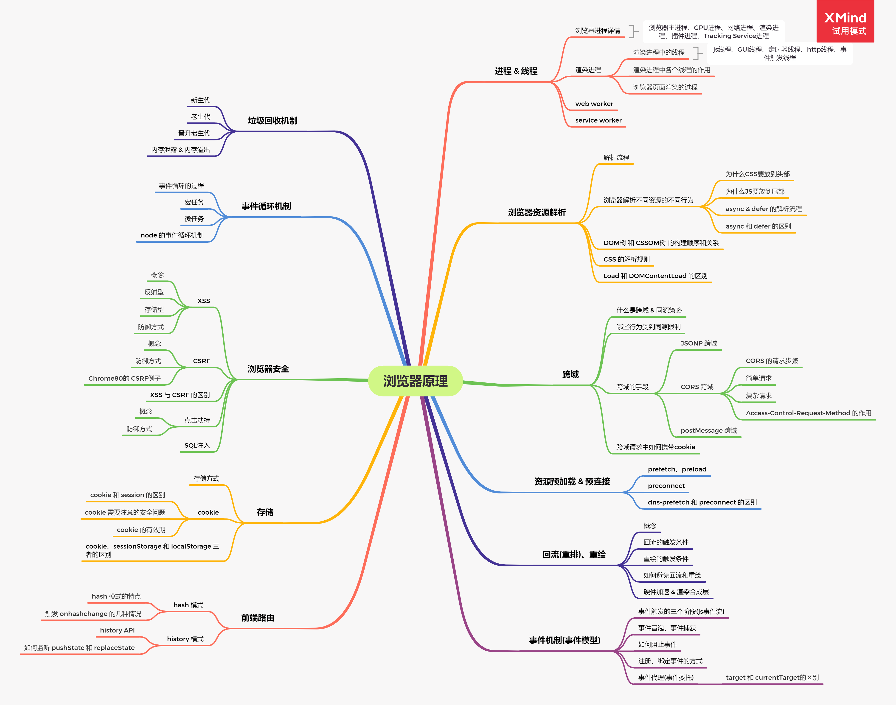

浏览器原理

1、浏览器渲染机制
渲染过程
- 构建DOM树: 浏览器从上到下解析
HTML文档，进行DOM树的生成 - 构建CSSOM树: 在解析
HTML过程中，遇到CSS样式时，会异步下载CSS，下载完成后构建CSSOM树 - 浏览器解析遇到图片时，会进行异步下载；当遇到不带
async、defer的script时，会阻止HTML的解析，而去下载js并且去执行；当执行完js后才会再去解析HTML1
CSS 和 JS,JS 和 DOM解析，CSS 和 渲染树之间是相互阻塞的
- 构建渲染树: 根据DOM树和CSSOM树构建渲染树
- 布局(layout): 根据渲染树将DOM树的每一个节点布局在屏幕上的正确位置
- 绘制(paint): 绘制所有，为每一个节点使用对应，绘制到屏幕上
- 构建图层: 需要对
布局进行分层，生成图层(z轴) - 生成绘制列表: 将
图层的绘制拆分成绘制指令，并按顺序生成绘制列表，并提交到合成线程 - 光栅化(
栅格化)生成位图:合成线程将图层划分成图块，并在光栅化线程池中将图层转化成位图
- 构建图层: 需要对
2、浏览器缓存
缓存行为
- 浏览器每次发起请求，都会先在浏览器缓存中查找该请求的结果以及缓存标识
- 浏览器每次拿到返回的请求结果都会将该结果和缓存标识存入浏览器缓存中
缓存位置
service worker: 是运行在浏览器背后的独立线程，无法直接访问DOM,但是可以做离线缓存、消息推送和网路代理。传输协议必须为HTTPSMemory Cache: 内存中的缓存Disk Cache: 存储在硬盘中的缓存Push Cache: (推送缓存)是HTTP2中的内容缓存的过程
- 浏览器第一次加载资源，浏览器将资源文件从服务器上请求下载下来，并把
response header及请求的返回时间一起缓存 - 下一次加载资源的时候，先比较当前时间与上次返回200的时间差，如果没有超过
cache-control设置的max-age,则没有过期，命中强缓存，不发送请求直接从缓存中获取资源(如果使用的是HTTP1.0则使用expires判断是否过期)；如果没有命中强缓存，则向服务器发送header带有If-None-Match和If-Modified-Since的请求 - 服务器收到请求后，优先根据
Etag的值判断被请求的资源是否有更改，如果Etag一致则命中协商缓存，返回304；如果没有命中协商缓存，直接返回新的资源并且带上新的Etag，返回200 - 如果请求中没有
Etag，则将If-Modified-Since和被请求文件的最后修改时间进行对比，一致则命中协商缓存；不一致则返回新的last-modified和文件强缓存
强缓存可以通过两种HTTP Header实现:Expires和Cache-Control；强缓存表示缓存期间不需要发送请求 Expires是HTTP/1.0的产物；值代表的是服务端的时间，并且Expires受限于本地时间，如果修改本地时间，可能会造成缓存失效CaChe-Control是HTTP/1.1的产物，优先级高于Expires；该属性的值表示资源会在多少秒后过期Cache-Control属性
Cache-Control首部字段是HTTP/1.1中定义的字段，用于控制缓存行为，可以组合使用多种指令，多个指令之间使用‘,’分隔；值有以下:max-age指令给出了缓存过期的相对时间，单位为秒；时间是相对于请求的时间s-maxage指令只适用于公共缓存服务器(资源从源服务器中发出，被代理服务器接收并缓存)；当使用s-maxage后，公共缓存服务器将直接忽略Expires和max-age指令的值public指令表示资源可以被任何节点缓存(包括代理服务器和客户端)private指令表示资源只能在客户端缓存，代理服务器不会缓存该资源(同时设置了private和s-maxage，s-maxage会被忽略)no-cache当在响应头中返回时表示代理服务器不可以进行缓存，客户端可以进行缓存但是在每次使用缓存前需要向服务器端确认其有效性；当在请求头中，表示强制使用协商缓存no-store在响应头和请求头中，表示请求、响应的内容是机密的，不可以进行缓存
3、浏览器的事件循环机制
- js执行代码，执行中判断时同步任务还是异步任务
- 如果是异步任务则将异步任务交给相应的异步api去异步执行，如果是同步任务则执行同步代码
- 异步api执行完异步任务后，将异步回调放到任务队列中去
- 执行完同步代码后，去任务队列中查找是否有异步回调
- 如果微任务队列中有任务，先执行微任务队列中的异步回调
- 执行完微任务队列中的任务后，再执行宏任务队列中的异步回调
1
2
3
4注意：
一个Event Loop可以有一个或多个事件队列，但是只有一个微任务队列
每次执行完微任务队列页面会重新渲染一次
每执行一个宏任务页面也会重新渲染一次 - 宏任务
- setTimeout
- setInterval
- setImmediate(node.js)
- I/O
- UI事件
- postMessage
- requestAnimationFrame(处于渲染阶段，待定)
- 微任务
- Promise.then
- process.nextTick(node.js)
- MutationObserver
4、V8的垃圾回收
在JavaScript执行过程中会形成栈和堆两种空间，栈中主要是存放函数调用时的上下文，堆主要存放变量的真实数据；调用栈在垃圾回收的过程主要是通过覆盖的方式来进行垃圾回收；堆中的垃圾回收则是我们接下来要讲的V8垃圾回收的过程。
垃圾回收过程一般分为下面的几个过程
- 通过
GC Root标记空间中的活动对象和非活动对象，V8目前根据GC Root作为初始存活对象的集合，从这些GC Root开始遍历所有的对象，能够访问到的即为活动对象，不能访问到的为非活动对象 - 回收
非活动对象的内存
GC Root包括但是不限于以下几种
- window 对象(全局对象)
- 文档DOM树，可以遍历全部的原生DOM节点
- 存放在栈中的变量
而V8对堆的垃圾回收主要是通过副垃圾回收器(新生代)和主垃圾回收器(老生代)来进行回收
新生代 (副垃圾回收器)
新生代区域分为to(空闲区)和from(使用区)两个区域，当有新变量生成时放到from区域；当from快满时采用scavenge算法进行垃圾回收，垃圾回收时通过置换to和from区域进行回收，当一个对象进行了两次置换后会晋升到老生代；新生代区域的特点是: 空间小，变量存活时简短。
老生代 (主垃圾回收器)
老生代区域采用标记回收和标记清理的方式来进行垃圾回收；老生代进行垃圾回收的时候，会先将老生代区域的变量进行标记，然后将非活动对象进行清理，之后会将活动对象移动到堆的一边，该过程完成了空间的整理；老生代区域的特点是: 空间大，变量存活时间长
1
由于老生代的空间大，所以老生代算法由全停顿优化到增量标记
晋升老生代
前面提到当新生代的变量经历了两次scavenge算法后会晋升老生代区域，是因为新生代区域的空间小，所以就有了晋升机制；晋升老生代一般有以下的情况:
- 存活时间长的对象
- 占用内存比较大的对象，一般是
新生代25%的大小的对象会直接晋升老生代
内存溢出 & 内存泄露
内存泄露是被使用的变量过期了，空间没有被回收；内存溢出是因为浏览器分配的内存大小是固定的，当内存占用超过可分配的大小就造成了内存溢出；内存溢出有可能是因为内存泄露造成的
常见的内存泄露
- 闭包可能导致内存泄露
- DOM节点的引用没有清除，DOM绑定的事件没有清除
- 过期的定时器没有清除
- 意外定义的全局变量
如何检测内存泄露
- 浏览器的任务管理器 -> 查看
内存/javascript 内存 - Chrome浏览器 F12
performance-> 选中Memory-> 点击开始可以查看js Heap/Documents/Node/Listeners/GPU Memory等内存变化 - 堆快照 Chrome浏览器 F12
Memory-> 开始录制 -> 结束可以查看堆快照
5、浏览器资源解析
解析流程
- 浏览器由上到下解析
HTML，此时document.readystate为loading - 解析中遇到不带
async和defer的js脚本时，需要等待脚本下载并且解析完成后才会继续解析HTML - 当文档解析完成后，
document.readystate变为interactive，触发DOMContentLoaded事件 - 文档解析完成后，浏览器可能还在等待图片等资源的加载，当所有资源都加载完成后，
document.readystate变成complete，并且触发load事件浏览器解析不同资源的不同行为
- 没有带
async/defer异步标识的JS会阻塞DOM的生成(HTML 的解析) CSS会阻塞JS的执行CSS会阻塞Render Tree的生成IMG会异步下载，不会阻塞页面的解析defer 和 async 脚本的解析流程
defer脚本会异步下载，并且会等到HTML解析完成后再去执行，同时defer脚本会延迟DOMContentLoaded触发的时间async脚本也会异步下载，当async脚本下载完成后会立即执行，并且执行时会阻塞HTML的解析defer 和 async 的区别
async和defer都会异步下载，defer会在文档解析完后进行顺序执行，async会在下载完后立即执行CSS解析规则
- 排版引擎解析CSS的时候是
从右往左解析的，因为样式表可能很庞大，DOM 对应的样式只是样式表中的很小的一部分，所以为了更快的获取到对应的样式，能够更快的将不匹配的样式给抛弃Load 和 DOMContentLoaded 的区别
- 当页面的所有资源都加载完成后，包括异步脚本、图片等资源，就会触发
Load事件 DOMContentLoader则是在文档解析完成，并且DOM树已经构建完成了
6、跨域
同源策略 & 什么是跨域
- 具有相同
域名、端口、协议的地址是同源的 - 同源策略是指浏览器限制了不同源的js的部分行为
- 跨域则是解决同源策略的方案
哪些行为会受同源策略的限制
- 限制了本地存储的访问，例如
Cookie、localStorage、indexDB - 限制了
DOM的访问 - 限制了
AJAX请求的发送跨域的手段
CORS(Cosses-Origin-Resourse-Shaking)跨域资源共享- JSONP
- postMessage
- 代理(nginx/node)
CORS
CORS是一种机制，它允许浏览器向跨域服务器发送XMLHttpRequest或者Fetch请求CORS 的请求步骤
- 当我们发起跨域请求时，如果时复杂请求，浏览器会自动发起
预检请求(OPTIONS请求)，用于确认目标资源是否支持跨域；如果是简单请求，则直接发送请求 - 浏览器根据服务器响应的
Access-Control-Allow-Origin头部来判断是否支持跨域，如果支持则正常发送请求，否则在控制台打印错误(没办法知道具体错误)
简单请求
一个简单请求是满足一下条件的请求
允许的请求方法之一
GETPOSTHEAD
除了用户代理自动设置的头部(
Connection、User-Agent)，以下这几个Fetch标准头部AcceptAccept-LanguageContent-LanguageContent-TypeRange(仅使用简单的标头值)
Content-Type中允许的MIME类型application/x-www-form-urlencodeedmultipart/form-datatext/plain
除了上面的方式外的都是复杂请求，复杂请求都会发送一个预检请求
1 | 预检请求内会包含 Access-Control-Request-Method 和 Access-Control-Request-Headers 头部进行预检 |
JSONP
JSONP就是利用script标签没有跨域限制的漏洞，通过script标签来发送请求，并且通过一个回调方法来获取响应数据
1 | <script src="http://xxx/xxx?callback=call"></script> |